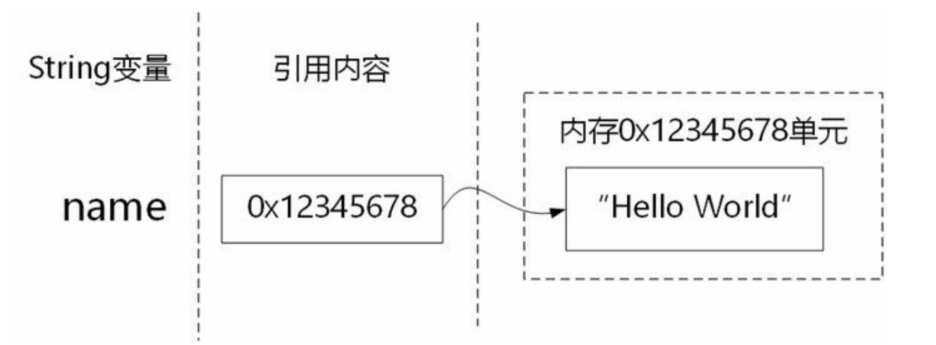

9.1. 创建对象¶
9.1.1. 创建对象¶
创建对象包括两个步骤：声明和实例化。
声明
声明对象与声明普通变量没有区别，语法格式如下：
type objectName;
其中type是引用类型，即类、接口和数组。示例代码如下：
String name;
该语句声明了字符串类型对象name。可以声明并不为对象分配内存空间，而只是分配一个引用。
实例化
实例化过程分为两个阶段：为对象分配内存空间和初始化对象，首先使用new运算符为对象分配内存空间，然后再调用构造方法初始化对象。示例代码如下：
String name;
name = new String("Hello World");
代码中String(“Hello World”)表达式就是调用String的构造方法。
对象实例化

9.1.2. 空对象¶
一个引用变量没有通过new分配内存空间，这个对象就是空对象，Java使用关键字null表示空对象。示例代码如下：
String name = null;
name = "Hello World";
系统会抛出异常。这是因为调用length()方法时，name是空对象。程序员应 该避免调用空对象的成员变量和方法，代码如下：
package com.company06;
public class Main {
public static void main(String[] args) {
String name = null;
//name = "Hello world";
System.out.println(name);
if (name != null) {
int len = name.length();
System.out.println(len);
}
}
}
提示 产生空对象有两种可能性：第一是程序员自己忘记了实例化，第二是空对象是别人传递过来的。程序员必须防止第一种情况的发生，应该仔细检查自己的代码，为自己创建的所有对象进行实例化并初始化。
第二种情况需要通过判断对象非null进行避免。